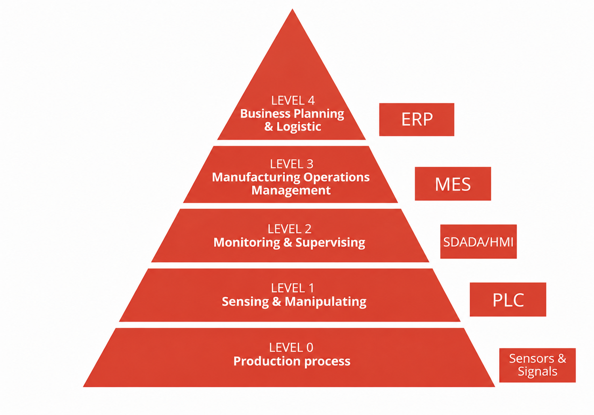
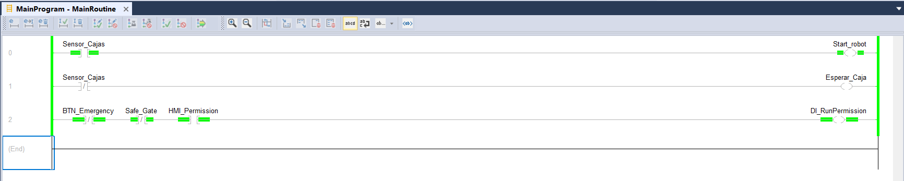
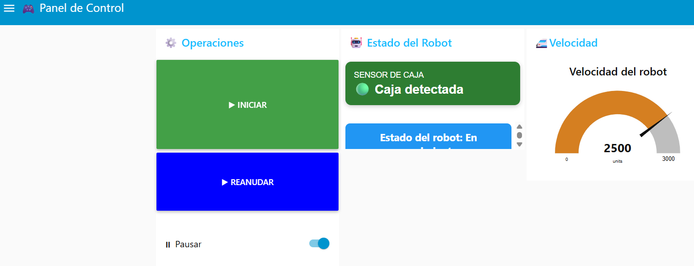
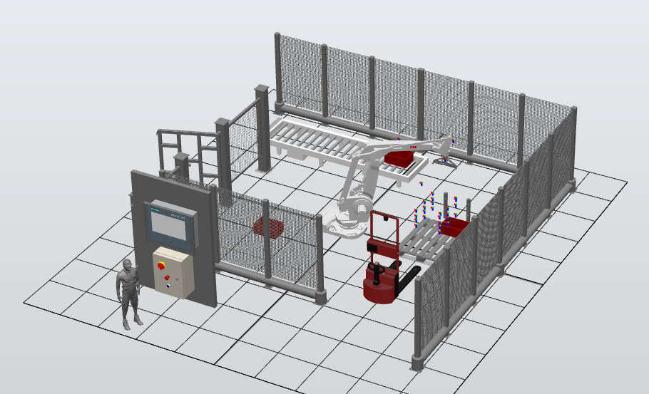

La propuesta de automatización se diseñó a partir de una arquitectura integrada por robótica industrial, control mediante PLC, supervisión SCADA y visión artificial, con el objetivo de mejorar la productividad, reducir la intervención manual y aumentar la confiabilidad del proceso de envasado y clasificación de botellas.
Para las operaciones de manipulación y paletizado al final de la línea se propone la implementación del robot paletizador ABB IRB 660, seleccionado debido a que está diseñado específicamente para aplicaciones de final de línea y manejo de cargas. Este robot permite manipular cajas, canastas o agrupaciones de botellas de manera rápida, repetitiva y precisa, además de reducir riesgos ergonómicos y aumentar la capacidad de producción.
Para el control general del proceso se propone el PLC Siemens S7-1200 CPU 1214C, encargado de coordinar las operaciones de transporte, clasificación y rechazo de productos, además de la comunicación entre los distintos dispositivos de la línea. Como interfaz de supervisión se plantea la HMI Siemens KTP700 Basic, la cual permitirá visualizar variables del proceso, estados de operación y alarmas del sistema.
Para la inspección de las botellas se propone el sensor de visión artificial ifm O2D550, capaz de detectar presencia, posición y posibles defectos en las botellas mediante procesamiento de imagen integrado. Con el fin de reducir desperdicios y mejorar el control de calidad, se plantean dos estaciones de inspección y rechazo distribuidas en diferentes etapas de la línea de producción.
La primera estación de inspección estará ubicada antes del llenado, donde el sistema de visión verificará la correcta presencia y estado físico de las botellas vacías. En caso de detectar deformaciones o daños, el PLC activará un cilindro neumático lateral encargado de expulsar automáticamente la botella defectuosa antes de que ingrese al proceso de llenado, evitando pérdidas de producto y materiales.
La segunda estación de inspección estará ubicada después de las etapas de llenado, tapado y etiquetado, funcionando como un control de calidad final. En esta etapa se verificarán variables como el nivel de llenado, la presencia correcta de la tapa y el estado de la etiqueta. Cuando se detecte una botella defectuosa, el PLC activará un desviador lateral suave controlado neumáticamente, el cual dirigirá el producto hacia una línea secundaria o contenedor de rechazo sin generar impactos bruscos que puedan dañar el envase o provocar derrames.
Finalmente, toda la arquitectura será supervisada mediante un sistema SCADA, encargado de monitorear variables de producción, estados de los equipos, alarmas y estadísticas de rechazo en tiempo real, facilitando el análisis operativo y la detección temprana de fallas dentro del proceso automatizado.

La propuesta de automatización se desarrolló siguiendo los lineamientos de la norma ISA-95, que establece un marco de referencia para la integración de sistemas de control y gestión en entornos industriales. Esta norma define cinco niveles jerárquicos que permiten organizar y estructurar la información y los procesos dentro de una planta de producción.
La arquitectura propuesta integra los niveles definidos por ISA-95, permitiendo la comunicación entre los dispositivos de campo, el sistema de supervisión SCADA, el sistema MES y el ERP. Esta integración facilita el intercambio de información en tiempo real para apoyar la toma de decisiones y la trazabilidad del proceso productivo.
La comunicación entre dispositivos se plantea mediante redes Ethernet Industrial, utilizando protocolos ampliamente implementados en la industria como Profinet y OPC UA, permitiendo escalabilidad e interoperabilidad entre los distintos equipos.
El gemelo digital representa virtualmente la planta de producción permitiendo validar modificaciones, realizar simulaciones y evaluar el comportamiento del sistema antes de implementar cambios sobre la planta física.
Su implementación reduce tiempos de puesta en marcha, disminuye riesgos y facilita actividades de mantenimiento y capacitación de operadores.
Como parte de la propuesta de automatización se diseñó una celda robotizada de paletizado utilizando un robot industrial ABB IRB 660, encargado de manipular y organizar las cajas de botellas al final de la línea de producción. La celda fue desarrollada en RobotStudio e integra la programación en RAPID, un PLC para el control del proceso y un sistema SCADA desarrollado en Node-RED para el monitoreo y operación de la estación. Además de validar el funcionamiento del proceso de paletizado, se implementó la comunicación entre los diferentes sistemas mediante ABB IoT Gateway, Softing OPC UA y EtherNet/IP, permitiendo supervisar el estado del robot, intercambiar señales con el PLC y adaptar el comportamiento del robot de acuerdo con las condiciones del proceso y las alarmas generadas. Finalmente, se realizó una evaluación de riesgos de la celda siguiendo la metodología establecida por la norma ISO 14121-1, con el fin de proponer medidas de seguridad que garantizaran una operación confiable y segura.

PLC

Panel SCADA

Vista de la celda
El sistema SCADA permite supervisar todas las variables del proceso, registrar históricos, administrar alarmas y visualizar el estado de cada estación de producción mediante una interfaz gráfica amigable para el operador.
Toda la información recolectada será almacenada para posteriormente ser utilizada por el sistema MES y el ERP.
El sistema MES desarrollado permite administrar órdenes de producción, consultar el estado de fabricación, registrar indicadores de producción, visualizar información histórica y servir como puente entre el nivel de control y el nivel empresarial.
Además incorpora indicadores de desempeño como producción, disponibilidad y eficiencia para apoyar la toma de decisiones.
El ERP integra los procesos administrativos relacionados con inventario, compras, ventas, recursos humanos y producción, permitiendo una gestión centralizada de la información empresarial.
La comunicación entre el ERP y el MES garantiza la sincronización de órdenes de producción y el control de inventarios en tiempo real.
Durante el desarrollo del proyecto se realizaron actividades relacionadas con el diseño de la arquitectura, selección de equipos industriales, desarrollo del prototipo MES, modelado del ERP, integración mediante ISA-95 y elaboración de la documentación técnica.
El trabajo permitió aplicar conocimientos de automatización industrial, robótica, sistemas de información industrial e Industria 4.0 en una propuesta integral para una planta de bebidas.